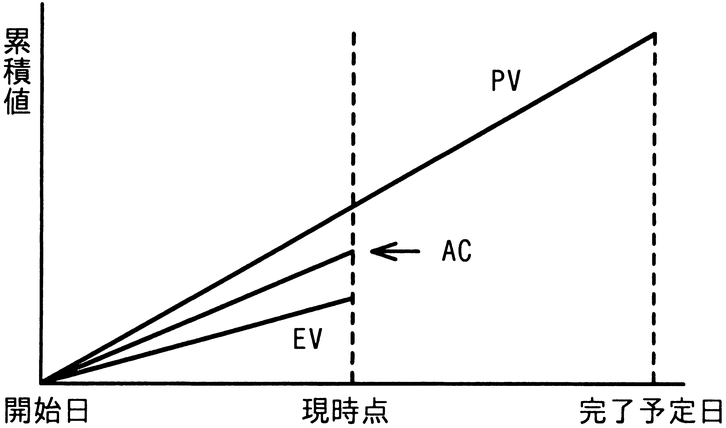

EVMで管理しているプロジェクトがある。図は，プロジェクトの開始から完了予定までの期間の半分が経過した時点での状況である。コスト効率，スケジュール効率がこのままで推移すると仮定した場合の見通しのうち，適切なものはどれか。

ア 計画に比べてコストは多くなり，プロジェクトの完了は遅くなる。
イ 計画に比べてコストは多くなり，プロジェクトの完了は早くなる。
ウ 計画に比べてコストは少なくなり，プロジェクトの完了は遅くなる。
エ 計画に比べてコストは少なくなり，プロジェクトの完了は早くなる。